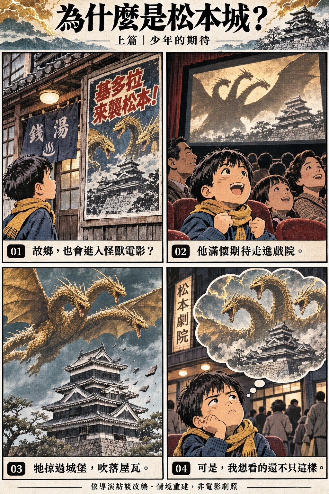
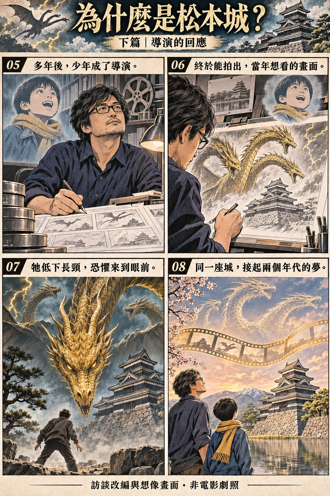

011964 / 舊作
02 / WHY MATSUMOTO CASTLE
一座城，
兩個年代，
同一個怪獸夢。
從昭和特攝，到山崎貴的童年記憶
THE STORY IN 8 PANELS
連續漫畫・訪談改編用八格漫畫，讀懂這段緣分。
從一張宣傳海報，到約半世紀後的電影創作。按 01 → 08 閱讀；漫畫中的表情、對話與場景為敘事重建。

澡堂裡的宣傳，讓故鄉與怪獸第一次在少年心中連起來。舊作中的松本城場面，卻沒有滿足他的期待。[5]

漫畫為 AI 繪製的訪談改編與概念畫面，非正式電影分鏡、非電影劇照；框內文字為中文敘事改寫，不作導演逐字引言。點圖可看大圖。
02童年 / 宣傳
03約55年 / 等待
04演出 / 恐懼
真正可怕的，是巨獸也能低下頭來看你。
基多拉的長頸，給了導演一種很具體的恐怖演法。山崎在 CINEMORE 訪談中提到，牠能把目線降到與人類相近的高度。巨大怪獸因此不只是遠處的輪廓，也能成為正在接近、正在注視人的威脅。[7]
放在松本城這樣的場景裡，可以進一步這樣閱讀：天守提供觀眾熟悉的建築尺度，長頸與頭部則能穿越這個尺度，把威脅帶到人的面前。由「看見怪獸」變成「被怪獸看見」，恐懼的距離也隨之縮短。這一段是本頁依訪談提出的場景分析，不是逐鏡頭的劇情記錄。
山崎也曾說，創作之初就希望人類參與哥吉拉與敵怪獸之間的局勢，而非只讓觀眾觀看怪獸互鬥。觀看襲城段落時，除了破壞規模，也值得留意鏡頭把我們放在誰的視線裡。[2]
05建築 / 場景閱讀
為什麼城堡，比陌生的高樓更容易留下印象？
松本城黑色下見板、白色漆喰與層疊屋頂的輪廓鮮明；官方資料也記錄了天守群五棟國寶建築的身分。這些特徵，讓它在畫面裡既容易辨認，也承載著長久保存下來的歷史。[4]
從影像敘事來看，觀眾先認得城堡，才更容易感受怪獸有多大；先理解這是一座被珍惜的建築，才更能感受到損失。對山崎而言，它又與故鄉的觀影記憶相連。這些層次疊在一起，使「基多拉來到松本城」超過了隨機挑選一個地標的效果。這是本頁的解讀，並不代表導演逐項說明過以上象徵。
06前作 / 回聲
重返同一座城，是創作上的回聲。
舊作提供的是基多拉初登場與松本遇襲的影像記憶；《哥吉拉 0.0》則延續《哥吉拉 −1.0》的故事，訪談報導介紹其時間設定在前作事件兩年後。這裡應分開理解「作品劇情的延續」與「導演對老電影的回應」。[2]
所以，松本城的意義可以從兩個方向看：對熟悉系列的觀眾，它喚起老怪獸電影的記憶；對理解山崎經歷的觀眾，它也像是一位長大後的電影人，隔著銀幕與當年的自己再次相遇。最後這個比喻，是本頁對導演創作動機的整理。